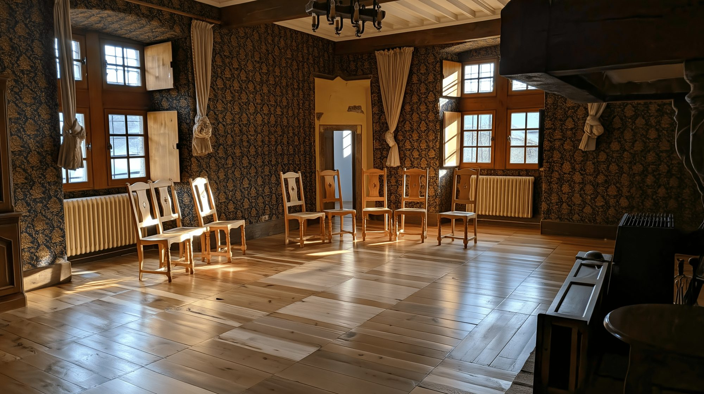
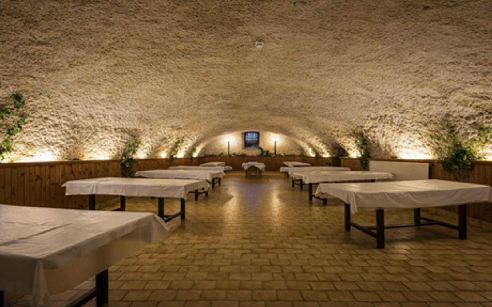

Une retraite dans un château rien qu’à vous.
Yoga, méditation, écriture, stage sportif ou résidence d’artistes : pas d’autres clients, une salle de pratique face au lac, et des repas à l’heure que vous choisissez.
Vérifier vos datesUn prix par personne, pour construire le vôtre
Vous animez la retraite et vous fixez votre tarif. Nous vous donnons un seul chiffre par personne et par nuit, tout compris : chambre, repas, salle de pratique. Le château étant privatisé pour vous, un minimum de 16 personnes est facturé.
Retraite tout compris
- Chambre partagéedès 120 € / pers. / nuitChambre, trois repas, salle de pratique en accès libre.
- Chambre individuelledès 155 € / pers. / nuitLa même chose, en chambre seule.
- Minimum16 personnes facturéesLe château reste réservé à votre groupe, quelle que soit sa taille.
- Résidences et festivalssur devisDes conditions écrites dès le premier échange : espaces, horaires, son, hébergement.
Ce que vous trouverez ici
- Aucun autre client pendant votre retraiteLe château est réservé à votre groupe, et à lui seul.
- Une salle de pratique ouverte de 6 h à 22 h60 m² au premier étage, parquet ancien, vue sur le lac. Tapis, coussins et chauffage fournis.
- Des repas à l’heure que vous choisissezUne option végétarienne à chaque repas, les régimes particuliers sur demande.
- Une équipe discrètePrésente aux repas et quand vous l’appelez. Invisible le reste du temps.


Résidences, collectifs, festivals
De l’espace, de la liberté, un hébergement simple. Les caves voûtées de 220 m² accueillent performances, concerts et soirées ; les trois salons deviennent des ateliers.
Les règles sont claires et écrites : rien à négocier une fois sur place.
Voir tous les espacesLes questions qu’on nous pose
Quels régimes alimentaires gérez-vous ?
Végétarien, vegan et sans gluten. Une option végétarienne est prévue à chaque repas.
Le groupe peut-il cuisiner lui-même ?
Pour une partie des repas, oui. La cuisine partagée n’est pas pensée pour de grands groupes : nous vous demandons de passer par nous pour la plupart des repas.
Y a-t-il une sono ?
Non, apportez votre matériel. La salle de pratique vous est réservée de 6 h à 22 h.
Les animaux sont-ils acceptés ?
Oui, ils sont les bienvenus.
Une retraite en préparation ?
Envoyez-nous vos dates et la taille du groupe. On vous dit dans la journée si le château est libre.